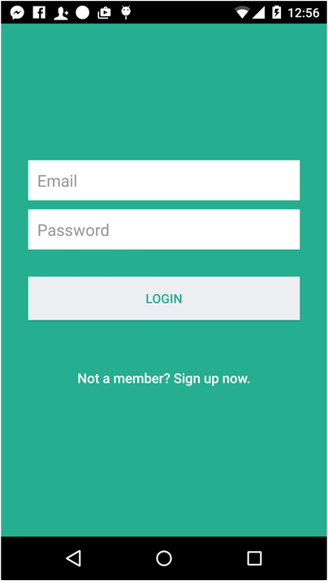
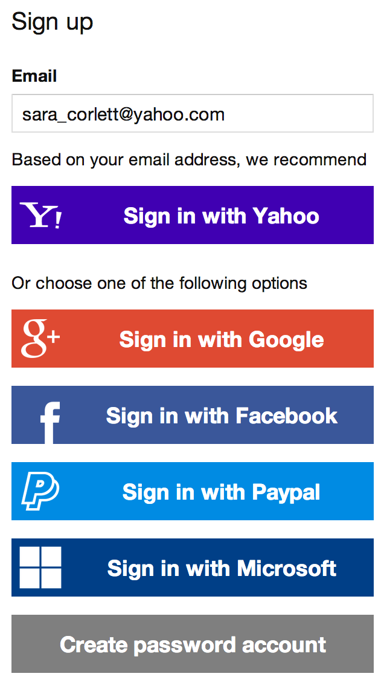
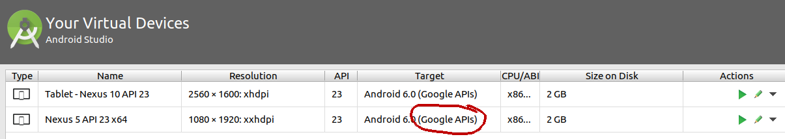
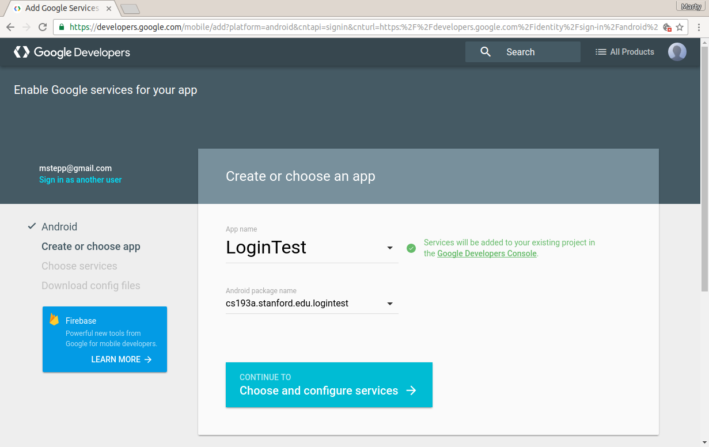

Authentication
Most modern apps require the user to have an account or log in.

- authentication: Logging in / verifying identity of a user.
- "Who is this user?"
- authorization: Granting / denying permissions for various actions.
- "What is this user allowed to do?"
- many ways to do this:
How to do Authentication

- do it yourself: Write code to ask for a user name/password.
- hard to get this right!
- must encrypt user data securely in database
- must use secure protocols, HTTPS, etc.
- if server hacked, users get mad
- Do not do this.
- use an external auth service: Rely on an outside entity for auth.
- Google account, Facebook, Microsoft, GitHub, PayPal, ...
- +: easier
- -: introduces a dependency; requires users to have an account on that service
- Google account, Facebook, Microsoft, GitHub, PayPal, ...
Google Identity Platform

- Google Identity Platform:
Services provided by Google to help integrate accounts and login into apps.
- sometimes just called "Google Sign-in"
- built on top of OAuth
- OAuth: Open standard for authorization features.
- current version: OAuth 2.0
Preparing your emulator
- to use Google Sign-in, must install Google Play Services in emulator
- in A.Studio: "SDK Manager"
- make sure "Google APIs" are installed
- in A.Studio: "AVD Manager"
- make sure your AVD uses "Google APIs"
- if not, click "pencil" icon to change it

Access key and config file
- must get API access key and configuration file for project
- go to https://developers.google.com/identity/sign-in/android/
- click "Get Started" → "Get a Configuration File"
- crucial: must set correct package (same as in Java code)
- e.g.
"package edu.stanford.cs193a.logintest;"
- get an SHA-1 key file (requires using Terminal) :-/

Download .json file
- you need to generate/download a file google-services.json
- Your app sends this to Google's server to get permission to use the API.
- save it into your app's app/ directory
- will not work if in wrong folder or stores wrong app name/package
- NOTE: be careful storing such a file in GitHub / online (has private keys in it!)
Add Google Signin to project
- in project level build.gradle file:
buildscript { ... dependencies { ... classpath 'com.google.gms:google-services:3.0.0' // add this line! - in app level build.gradle file:
dependencies { ... compile 'com.google.android.gms:play-services-auth:10.0.1' // add this line! } // put this at the very BOTTOM of the file! apply plugin: 'com.google.gms.google-services' // add this line! - then "Sync Now"
Sign-In button (optional)

<!-- res/layout/activity_?.xml -->
<LinearLayout ...>
<com.google.android.gms.common.SignInButton
android:id="@+id/sign_in_button"
android:layout_width="wrap_content"
android:layout_height="wrap_content" />
</LinearLayout>
- Note: Can't listen to events using
onClick(must attach in Java code)
Initialize Google API
private GoogleApiClient google;
@Override
protected void onCreate(Bundle savedInstanceState) {
...
// request the user's ID, email address, and basic profile
GoogleSignInOptions options = new GoogleSignInOptions.Builder(
GoogleSignInOptions.DEFAULT_SIGN_IN)
.requestEmail()
.build();
// build API client with access to Sign-In API and options above
google = new GoogleApiClient.Builder(this)
.enableAutoManage(this, this)
.addApi(Auth.GOOGLE_SIGN_IN_API, options)
.addConnectionCallbacks(this)
.build();
}
Activity events and callbacks
- in order to pass
thisto API client builder.enableAutoManagecall, you must implement some event listening methods in your activity:
public class MyActivity extends Activity
implements GoogleApiClient.OnConnectionFailedListener,
GoogleApiClient.ConnectionCallbacks {
...
public void onConnectionFailed(ConnectionResult connectionResult) {...}
public void onConnected(Bundle bundle) {...}
public void onConnectionSuspended(int i) {...}
Initiating sign-in process
- to do a login, start an activity using an intent created as follows:
// use this intent to start an activity for a result
Intent signInIntent = Auth.GoogleSignInApi.getSignInIntent(google);
- when the activity returns, examine the result:
GoogleSignInResult result =
Auth.GoogleSignInApi.getSignInResultFromIntent(intent);
if (result.isSuccess()) {
// signed in successfully
GoogleSignInAccount acct = result.getSignInAccount();
String username = acct.getDisplayName();
...
} else {
// login failed
...
}